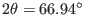

About McStas
Conditions of use
Authors/Contacts
Project funding
Screenshots
Download
Components
Linux Install (deb/rpm)
Mac OS X Install
Unix Install (src code)
Windows Install
Other Downloads (share)
Documentation
McStas manual
FAQ
Known problems
Publications
C Compilers
Other
Tools
Tutorial
Next: Example instrument file Up: Exercises Previous: Exercise: Insert a real
Exercise: Insert an analyzer
- Comment out the banana detector and beamstop with /* and */ before and after the components, respectively. Copy the banana detector, but make it to a single detector by changing the options for the Monitor_nD component to ``single''.
- Add an arm at the sample and an angle to rotate the part of the instrument located after the sample, e.g. TT (Two ) and decide a more relevant size of the now rectangular detector. Look at your results from the last simulation to determine an approximate scan range for the TT angle, e.g. -66.5,-67.5, which will make a scan around the peak at
. Scan TT across one or more powder lines.
- Between sample and detector, set up an analyser crystal by copying and modifying your monochromator component. Add new arms and angles: OMA and TTA; A is for Analyzer. Adjust the analyser to Bragg condition for the chosen wavelength. Re-scan TT and notice the difference to the scan performed in the previous task. Try also scanning around -TT and notice the difference to the other scan. Can you explain the difference?
Next: Example instrument file Up: Exercises Previous: Exercise: Insert a real Peter Kjær Willendrup 2015-11-12